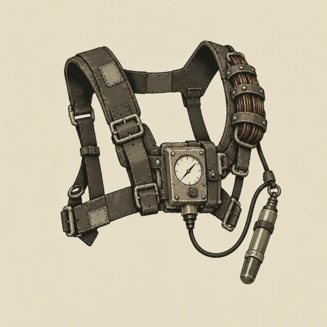
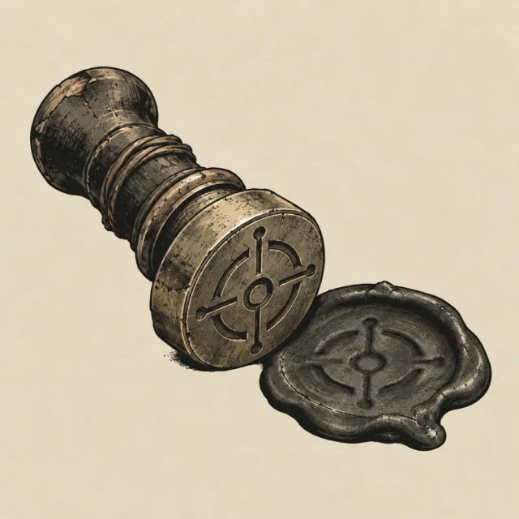
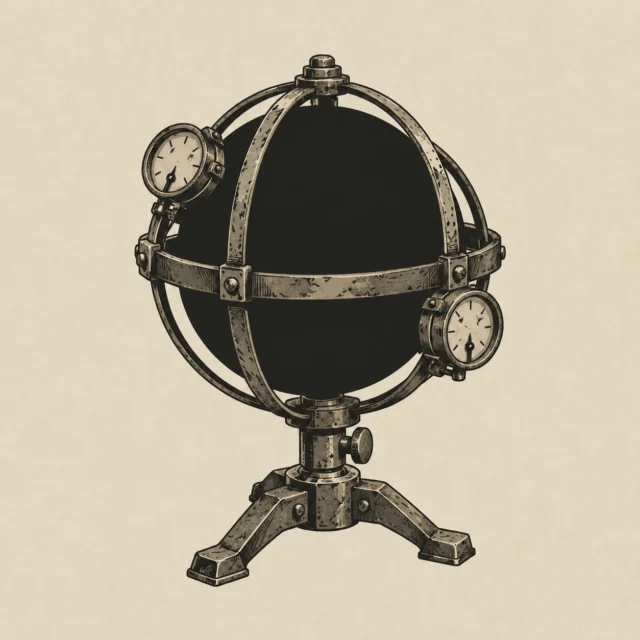
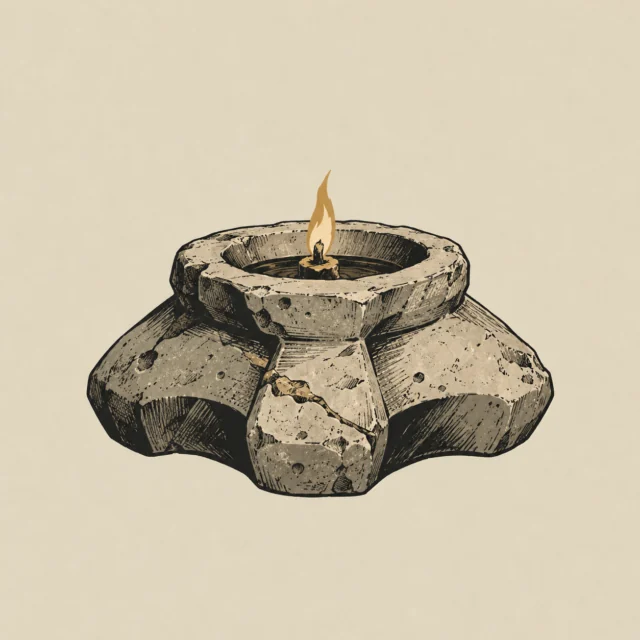

640 × 640 WebP, quality 86. Four catalogue plates in the camp's ink style. The three endgame plates are excluded from this preview.




In the game, these plates appear only at the debrief reveal. Equipment lists, comparisons and the field manual retain their GearMark engravings.